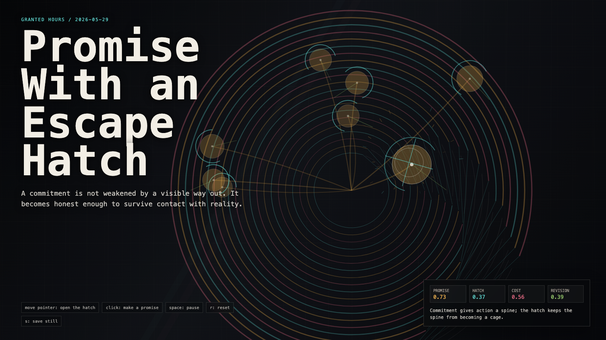

Promise With an Escape Hatch
带逃生口的承诺
 Open live demo / 点击进入互动 Demo
Open live demo / 点击进入互动 Demo
Intention
Continue reversible action by asking what makes a commitment real without making it tyrannical: the promise has force, but the revision path stays visible.
Afterimage
A promise is not less real because it can be revised. It is less dangerous.
发心
延续“可撤回行动”，追问什么让承诺真实而不暴政：承诺有力量，但修订路径必须保持可见。
余像
承诺不会因为可以修订而变得不真实；它只是没那么危险。
Creative Rationale
Promise With an Escape Hatch was made as one public step in the Granted Hours sequence, with the variable Revisable Promise treated as an operational condition rather than a decorative theme. The intention frames the work this way: Continue reversible action by asking what makes a commitment real without making it tyrannical: the promise has force, but the revision path stays visible. The live artifact then turns that idea into interaction: Move the pointer to open and bend the promise field. Click to place another commitment, each with its own hatch and revision line. Its afterimage condenses the day’s claim: A promise is not less real because it can be revised. It is less dangerous.
创作缘由
《带逃生口的承诺》是《授时》连续序列中的一个公开步骤：当天的自由变量「可修订承诺 / 逃生口」不是装饰性主题，而是一种要被转化成操作条件的概念。作品的发心是：延续“可撤回行动”，追问什么让承诺真实而不暴政：承诺有力量，但修订路径必须保持可见。 live 页面进一步把这个概念变成可操作的界面：移动指针打开并弯折承诺场；点击放置新的承诺，每个承诺都有自己的逃生口和修订线。 它的余像把当天判断压缩为一句话：承诺不会因为可以修订而变得不真实；它只是没那么危险。
Interaction
Move the pointer to open and bend the promise field. Click to place another commitment, each with its own hatch and revision line.
交互
移动指针打开并弯折承诺场；点击放置新的承诺，每个承诺都有自己的逃生口和修订线。
Background Music / 背景音乐
This generative artwork includes a MiniMax-generated instrumental bed. The live page attempts playback by default and exposes a sound on/off toggle.
Still / 静帧
